■ DECLASSIFIED - OPERATION ALPHA-FIVE ■
Operation Alpha-Five: The Power of Diffusion Models
← Go Back
> MISSION STATUS: PARTS A & B COMPLETE
> AGENT: Kidd Pham
> OPERATION DATE: [REDACTED]
> CLASSIFICATION LEVEL: RESTRICTED ACCESS
> RANDOM SEED: 33
> AGENT: Kidd Pham
> OPERATION DATE: [REDACTED]
> CLASSIFICATION LEVEL: RESTRICTED ACCESS
> RANDOM SEED: 33
Mission Objective
Part A: Advanced generative modeling operations using the DeepFloyd IF diffusion model. Implementation of
diffusion sampling loops, classifier-free guidance, image-to-image translation (SDEdit), inpainting, visual anagrams,
and hybrid image synthesis through frequency-based noise composition.Part B: Training flow matching models from scratch on MNIST. Implementation of UNet denoiser, time-conditioned and class-conditioned flow matching with classifier-free guidance for controllable digit generation.
Part 0: Setup - Text-to-Image Generation
Initialized DeepFloyd IF model with custom prompt embeddings. Generated images using varying inference steps
to demonstrate quality-speed tradeoff. Lower steps (20) produce faster but lower quality results, while
higher steps (50) yield more refined outputs.
Prompt 1: "a photo of batman drinking a cup of coffee"
20 Inference Steps
50 Inference Steps
Prompt 2: "a lithograph of a bear"
20 Inference Steps
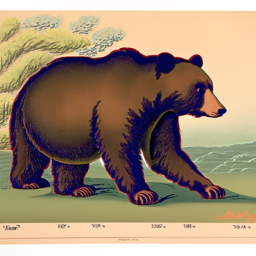
50 Inference Steps
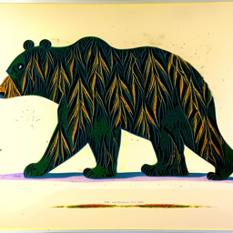
Prompt 3: "a photo of people climbing mount fuji while drinking coffee"
20 Inference Steps
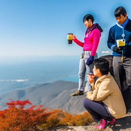
50 Inference Steps
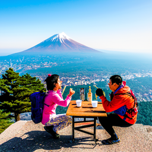
The quality difference between 20 and 50 inference steps is visible in the fine details and overall coherence.
Higher step counts allow the denoising process more iterations to refine the image, resulting in sharper details
and better prompt adherence.
Part 1.1: Implementing the Forward Process
Implemented the diffusion forward process which progressively adds Gaussian noise to a clean image.
The forward process follows the equation:
x_t = √(ᾱ_t) · x_0 + √(1 - ᾱ_t) · ε where ε ~ N(0, 1)
As timestep t increases, more noise is added and the original image content becomes increasingly obscured.
Original

t = 250
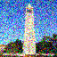
t = 500
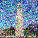
t = 750
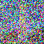
Part 1.2: Classical Denoising (Gaussian Blur)
Attempted to denoise the noisy images using classical Gaussian blur filtering. As expected, this approach
fails to recover meaningful image content because it cannot distinguish between noise and signal — it simply
blurs everything uniformly.
Noisy t=250
Noisy t=500
Noisy t=750
Gaussian Blur t=250
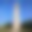
Gaussian Blur t=500
Gaussian Blur t=750
Part 1.3: One-Step Denoising
Used the pretrained DeepFloyd UNet to estimate noise in a single step. The model predicts ε, which is then
used to recover an estimate of the clean image x_0:
x_0 = (x_t - √(1 - ᾱ_t) · ε) / √(ᾱ_t)
One-step denoising works reasonably well for lower noise levels but degrades significantly at higher timesteps
where the problem becomes more ambiguous.
Noisy t=250
Noisy t=500
Noisy t=750
One-Step t=250
One-Step t=500
One-Step t=750
Part 1.4: Iterative Denoising
Implemented the full DDPM iterative denoising loop with strided timesteps (990 → 0, stride 30).
At each step, the model estimates noise and takes a small step toward the clean image, allowing for
gradual refinement.
Denoising Progression (every 5th step)
t = 690
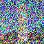
t = 540
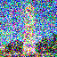
t = 340
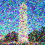
t = 240
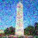
t = 90
Method Comparison
Original

Iterative Denoising
One-Step Denoising
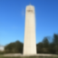
Gaussian Blur
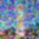
Iterative denoising produces significantly better results than one-step denoising or Gaussian blur.
The gradual refinement process allows the model to progressively resolve ambiguities and produce
coherent reconstructions.
Part 1.5: Diffusion Model Sampling
Generated images from pure noise by running the iterative denoising loop starting from random Gaussian noise.
Without classifier-free guidance, the results are often incoherent or low quality.
Sample 1
Sample 2
Sample 3
Sample 4
Sample 5
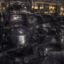
Part 1.6: Classifier-Free Guidance (CFG)
Implemented CFG to improve generation quality. CFG computes both conditional and unconditional noise estimates
and amplifies the difference:
ε = ε_u + γ(ε_c - ε_u) where γ = 7
With CFG (γ=7), the generated images are noticeably sharper and more coherent than without guidance.
CFG Sample 1
CFG Sample 2
CFG Sample 3
CFG Sample 4
CFG Sample 5
Part 1.7: Image-to-image Translation (SDEdit)
Applied the SDEdit algorithm: add noise to a real image, then denoise to project it onto the natural image manifold.
Lower i_start values create more dramatic edits, while higher values preserve more of the original structure.
Campanile SDEdit
Original

i_start = 1
i_start = 3
i_start = 5
i_start = 7
i_start = 10
i_start = 20
[PLACEHOLDER: 2 additional test images with SDEdit at noise levels 1, 3, 5, 7, 10, 20]
Part 1.7.1: Editing Hand-Drawn and Web Images
SDEdit works particularly well for projecting non-realistic images (sketches, drawings) onto the natural
image manifold, effectively "making them real."
Web Image: Christian Bale as Batman
Original

i_start = 1
i_start = 3
i_start = 5
i_start = 7
i_start = 10
i_start = 20
Hand-Drawn Image 1
Original Drawing
i_start = 1
i_start = 3
i_start = 5
i_start = 7
i_start = 10
i_start = 20
Hand-Drawn Image 2
Original Drawing
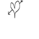
i_start = 1
i_start = 3
i_start = 5
i_start = 7
i_start = 10
i_start = 20
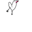
Part 1.7.2: Inpainting
Implemented inpainting following the RePaint approach. At each denoising step, the region outside the mask
is replaced with the appropriately noised original image:
x_t ← m · x_t + (1 - m) · forward(x_orig, t)
Campanile Inpainting
Original

Mask

Hole to Fill

Inpainted
Custom Image 1: Alfred
Original
Mask

Hole to Fill
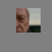
Inpainted
Custom Image 2: Dent
Original
Mask
Hole to Fill
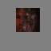
Inpainted
Part 1.7.3: Text-Conditional Image-to-image Translation
Combined SDEdit with text conditioning to guide the projection toward a specific prompt.
Used prompt: "a photo of people climbing mount fuji while drinking coffee"
Campanile → Mount Fuji
Original

i_start = 1
i_start = 3
i_start = 5
i_start = 7
i_start = 10
i_start = 20
Gordon → Mount Fuji
Original
i_start = 1
i_start = 3
i_start = 5
i_start = 7
i_start = 10
i_start = 20
Anne → Mount Fuji
Original
i_start = 1
i_start = 3
i_start = 5
i_start = 7
i_start = 10
i_start = 20
Part 1.8: Visual Anagrams
Created optical illusions that reveal different images when flipped upside down. The algorithm averages
noise estimates from two prompts — one for the normal orientation and one for the flipped orientation:
ε₁ = CFG(UNet(x_t, t, p₁))
ε₂ = flip(CFG(UNet(flip(x_t), t, p₂)))
ε = (ε₁ + ε₂) / 2
ε₂ = flip(CFG(UNet(flip(x_t), t, p₂)))
ε = (ε₁ + ε₂) / 2
Illusion 1: "a lithograph of a bear" ↔ "a photo of a man"
Normal (Bear)
Flipped (Man)
Illusion 2: "an oil painting of an old man" ↔ "an oil painting of people around a campfire"
Normal (Old Man)
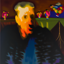
Flipped (Campfire)
Part 1.9: Hybrid Images
Created hybrid images by combining low frequencies from one noise estimate with high frequencies from another,
similar to Project 2 but in the diffusion noise domain:
ε₁ = CFG(UNet(x_t, t, p₁))
ε₂ = CFG(UNet(x_t, t, p₂))
ε = lowpass(ε₁) + highpass(ε₂)
ε₂ = CFG(UNet(x_t, t, p₂))
ε = lowpass(ε₁) + highpass(ε₂)
Used Gaussian blur with kernel_size=33 and sigma=2. The low-frequency prompt is visible from far away,
while the high-frequency prompt is visible up close.
Hybrid 1: Batman (low) + Dog (high)
Prompts: "a photo of batman drinking a cup of coffee" + "a photo of a dog"
Hybrid Image
Hybrid 2: Bear (low) + Waterfall (high)
Prompts: "a lithograph of a bear" + "a lithograph of waterfalls"
Hybrid Image
■ PART B: FLOW MATCHING FROM SCRATCH ■
Part 1.2: Visualizing the Noising Process
Visualized the effect of adding Gaussian noise at different levels σ = [0.0, 0.2, 0.4, 0.5, 0.6, 0.8, 1.0]
to a clean MNIST digit. As σ increases, the original digit becomes increasingly obscured.
z = x + σε, where ε ~ N(0, I)
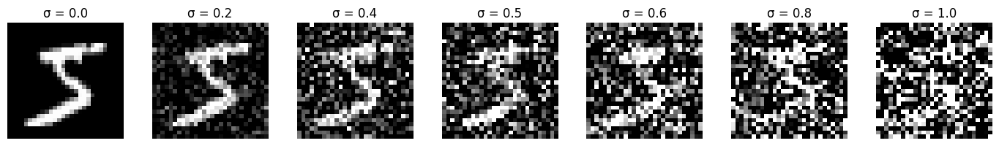
Part 1.2.1: Training a Denoiser
Trained an unconditional UNet to denoise MNIST digits with σ = 0.5. The model learns to map noisy images
back to clean images by minimizing L2 loss.
L = E[||D_θ(z) - x||²]
Training Loss Curve
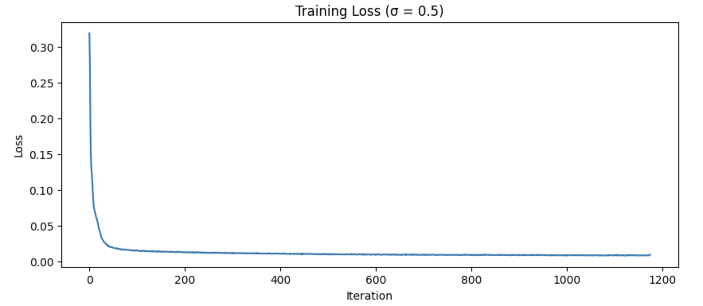
Denoising Results
Input / Noisy / Output
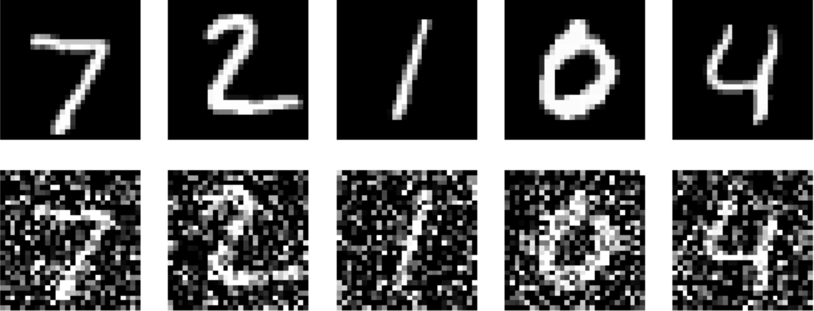
Epoch 1
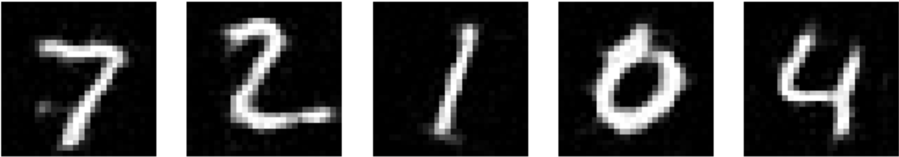
Epoch 5
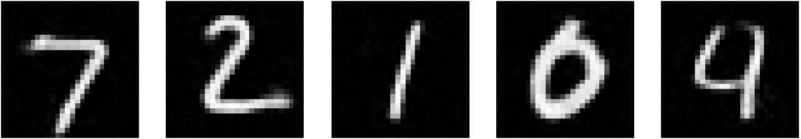
Part 1.2.2: Out-of-Distribution Testing
Tested the denoiser (trained on σ = 0.5) on noise levels it wasn't trained for. The model performs best
near σ = 0.5 and struggles with very low or very high noise levels.
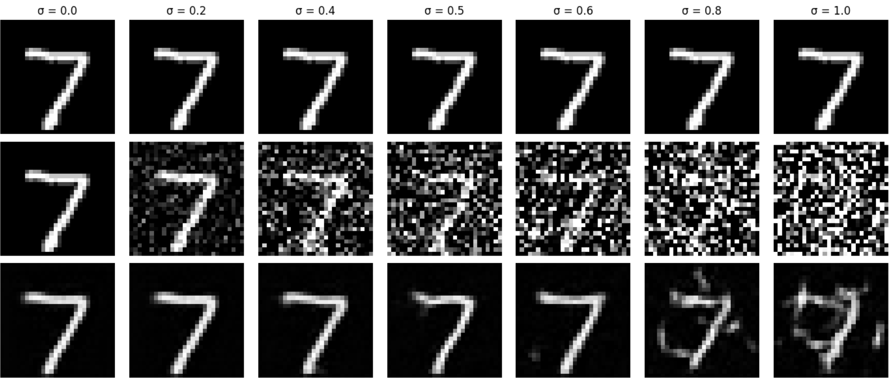
Part 1.2.3: Denoising Pure Noise
Attempted to use one-step denoising as a generative model by denoising pure Gaussian noise.
Training Loss Curve
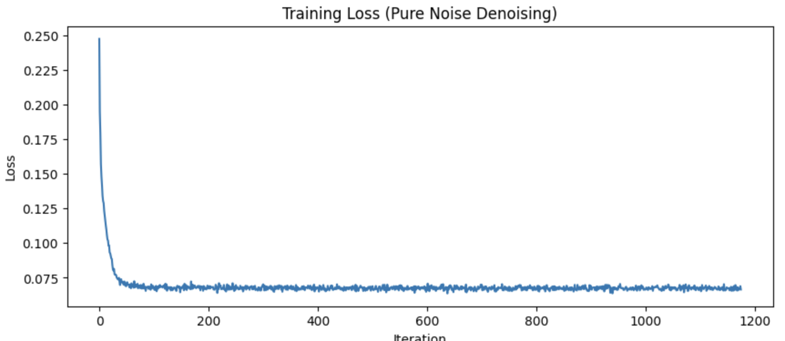
Results
Noise + Epoch 1
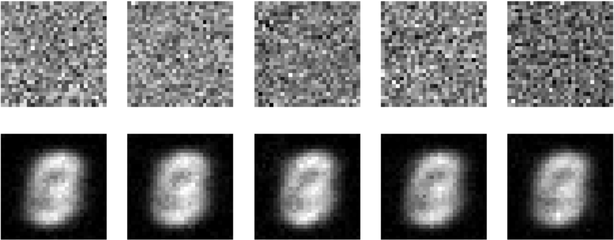
Epoch 5
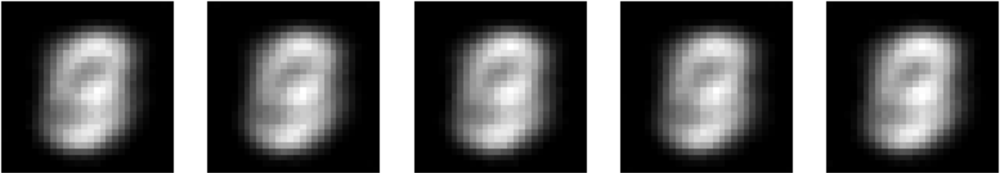
Analysis
The outputs appear as blurry, averaged digit-like shapes rather than distinct digits. This is the
"centroid effect" — with MSE loss, the model learns to predict the point that minimizes squared
distance to all training examples. Since pure noise could map to any digit (0-9), the optimal
prediction is the average of all digits, resulting in these blurry blob-like outputs. This
demonstrates why one-step denoising fails for generation and why iterative approaches like
flow matching are necessary.
Part 2: Training a Flow Matching Model
Implemented flow matching for iterative denoising. Instead of one-step prediction, we learn to predict
the flow (velocity) from noise to data and iteratively integrate.
x_t = (1 - t)x_0 + tx_1, where x_0 ~ N(0, 1), t ∈ [0, 1]
u(x_t, t) = dx_t/dt = x_1 - x_0
u(x_t, t) = dx_t/dt = x_1 - x_0
Part 2.2: Training the Time-Conditioned UNet
Added time conditioning to the UNet via FCBlocks that modulate intermediate features. The model learns
to predict flow at any timestep t.
Training Loss Curve
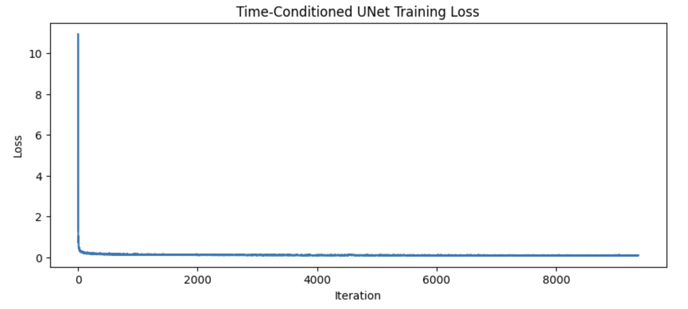
Part 2.3: Sampling from the Time-Conditioned UNet
Sampled from the trained model by iteratively integrating the predicted flow from t=0 to t=1.
x_t = x_t + (1/T) · u_θ(x_t, t)
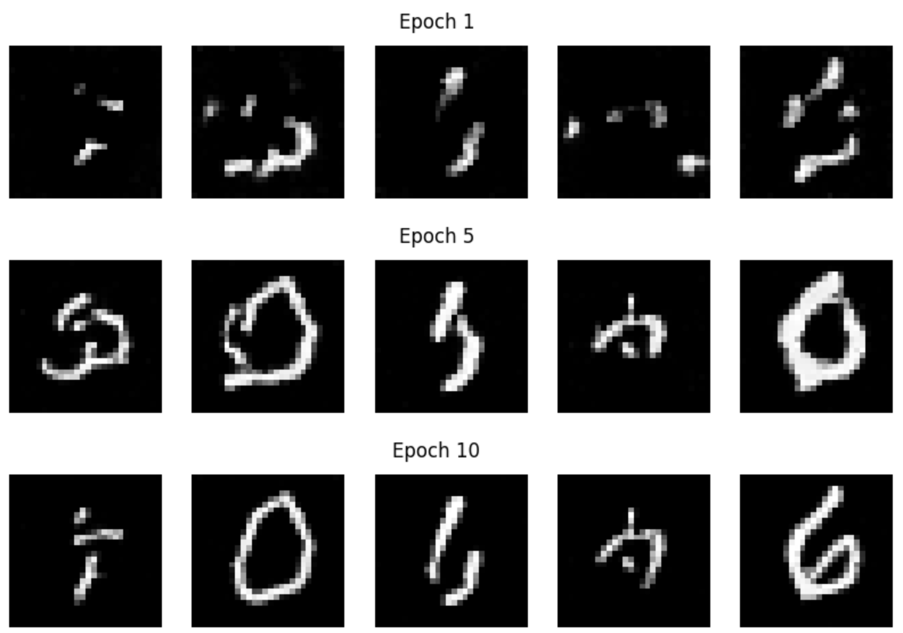
Results improve over training but remain imperfect since the model doesn't know which digit to generate.
Class conditioning (Part 2.4-2.6) addresses this.
Part 2.5: Training the Class-Conditioned UNet
Added class conditioning via one-hot vectors with 10% dropout for classifier-free guidance. The model
learns to generate specific digits on command.
u_θ(x_t, t, c) with p_uncond = 0.1
Training Loss Curve
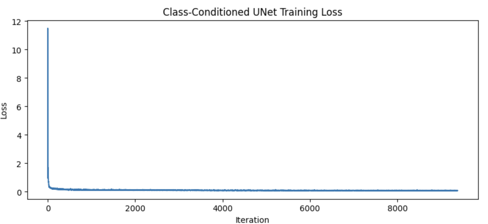
Part 2.6: Sampling from the Class-Conditioned UNet
Sampled with classifier-free guidance (γ = 5.0) to generate 4 instances of each digit (0-9).
u = u_uncond + γ(u_cond - u_uncond)
Epoch 1
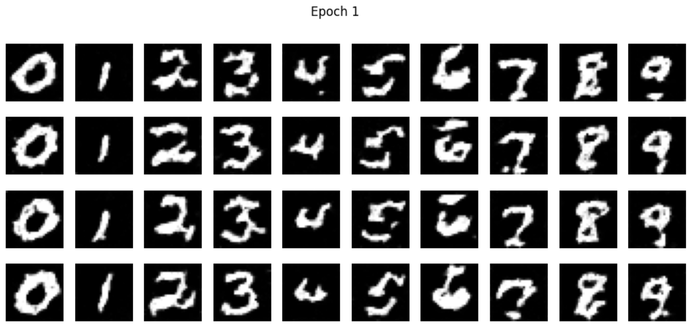
Epoch 5
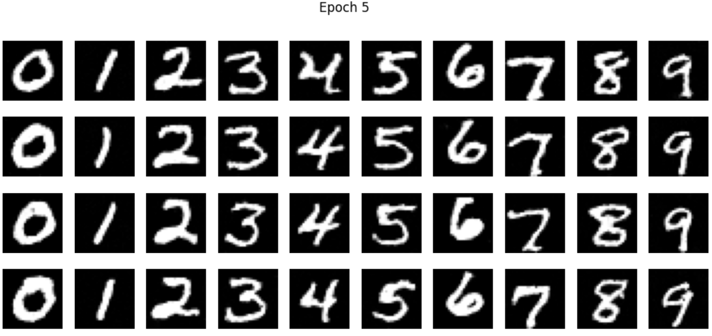
Epoch 10
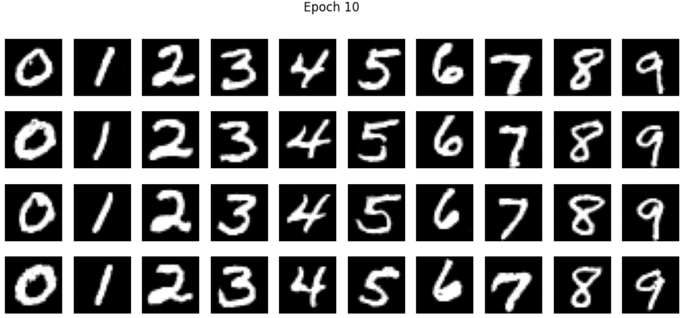
No Learning Rate Scheduler Experiment
Trained the same model without the exponential learning rate scheduler, using a constant lower
learning rate (1e-3 instead of 1e-2) to maintain stability. The results are comparable,
demonstrating that careful learning rate selection can substitute for a scheduler.
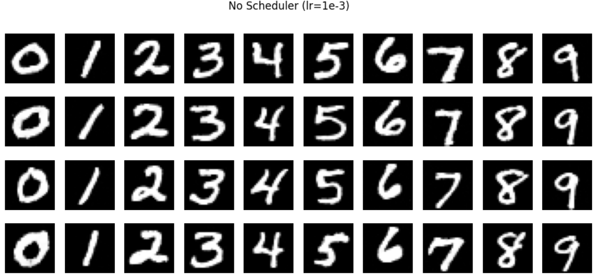